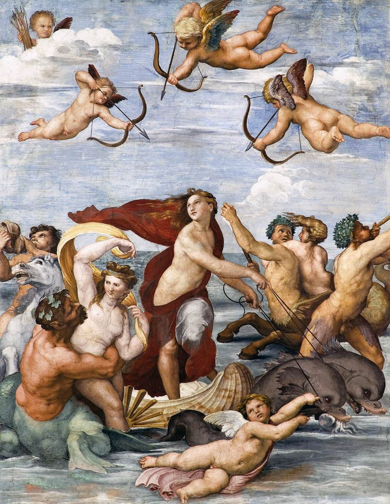
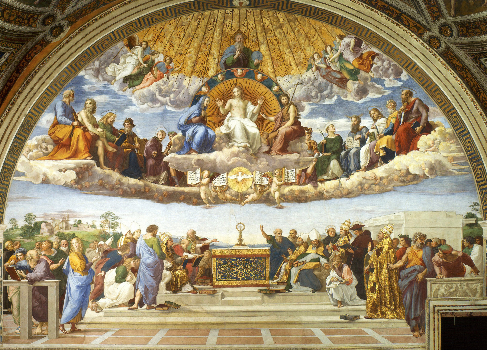
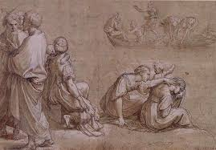
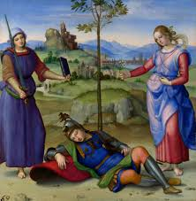

1 / 5

2 / 5

3 / 5

4 / 5

5 / 5

Rafael nació el 6 de abril de 1483 en Urbino, Italia.
Hijo de Magia di Battista di Nicola Ciarla. Los inicios en su formación fueron junto a su padre, el pintor Giovanni Santi.
Su madre murió en 1491. Su progenitor volvió a casarse en 1494. Con tan solo 11 años, quedó huérfano y bajo la custodia de su tío Bartolomeo, sacerdote.
Posteriormente fue alumno de Giovanni Santi y de Timoteo Viti en Urbino.
Su primera obra documentada parece ser que fue el Retablo Baronci, aunque también se cita La resurrección de Cristo, realizada entre 1499 y 1501 para la Iglesia de San Nicolás de Tolentino en Città di Castell.
Rafael, siendo apellidado el divino adolescente también pintó por entonces Apolo y Marsias (Museo del Louvre, París) y El sueño del caballero (1501, National Gallery, Londres).
En el año 1499 viajó a Perugia, donde fue ayudante del pintor Perugino. Realizó por entonces obras muy parecidas a las de su maestro: Los desposorios de la Virgen (1504, Galería Brera, Milán, obra pintada ya en Florencia) y la tabla del retablo de Città di Castello, la Virgen y los santos Jerónimo, Magdalena y Juan Evangelista (1503, National Gallery, Londres).
En 1504 llega a Florencia, donde estudió a Leonardo da Vinci, Miguel Ángel y Fray Bartolommeo, apreciando sus estudios anatómicos y poses dramáticas.
Introdujo un cambio de estilo tomando la perspectiva de forma más natural y suave. Pintó numerosas madonnas: Madonna del Granduca (1504-1505, Palacio Pitti, Florencia).
Expuso la influencia de Leonardo en la expresión de serenidad, la composición triangulada: La bella jardinera (1507-1508, Museo del Louvre, París) y la Virgen del jilguero (1505, Galería de los Uffizi, Florencia). Realizó después El Entierro de Cristo (1507, Galería Borghese, Roma).
En 1508 se trasladó a Roma requerido por el papa Julio II, quien le encargó la decoración mural de cuatro pequeñas stanze en el Palacio del Vaticano. En la Stanza della Segnatura (1509-1511) muestra un techo con las alegorías de la teología, la filosofía, la poesía y la justicia. En la pared, bajo la teología, se sitúa la Disputa, que representa la discusión del dogma de la Trinidad. La famosa Escuela de Atenas, situada debajo de la Filosofía, representa a Platón, Aristóteles y otros filósofos antiguos donde argumentan. Bajo la poesía se halla el Parnaso, en el que el Apolo aparece rodeado por las musas y los grandes poetas. Por último, bajo la justicia, Gregorio IX y Justiniano mostrando sus códigos. La Stanza d´Heliodoro (1512-1514), contiene escenas que representan el triunfo de la Roma católica sobre sus enemigos.
Cuando falleció Julio II en 1513 le sucedió León X aumentando Rafael su influencia. Maestro Mayor de la Basílica de San Pedro en 1514, un año más tarde dirigió todas las excavaciones arqueológicas en Roma.
Pintó parte de la tercera estancia del Palacio del Vaticano, la del Incendio del Borgo (1514-1517). El resto es obra de sus ayudantes. Para la cuarta cámara, la Sala Constantina, realizó los diseños. Además hizo obras de caballete, como el retrato de Julio II (1511-1512), la Madonna Sixtina (c. 1514, Gemäldegalerie, Dresde) o la Transfiguración (1517-1520, Vaticano).
Tuvo como pareja a Margherita Luti, conocida como la Fornarina (del italiano fornaio, panadero), su amante y modelo predilecta y quien le inspiró varias de sus obras.
Rafael falleció en Roma el 6 de abril de 1520.